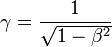
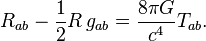
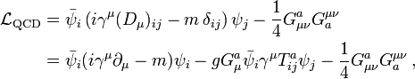
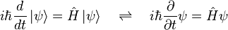

41/53. We will continue creating circumstances in which they themselves and some of their own people will see the signs and visible impact of these Divine Laws. Thereafter, it will become clear to them that whatever the Quran had told them was based on truth. It did happen like that.
Apply rationale and wisdom
حَتَّىٰ إِذَا جَاءُوا قَالَ أَكَذَّبْتُم بِآيَاتِي وَلَمْ تُحِيطُوا بِهَا عِلْمًا أَمَّاذَا كُنتُمْ تَعْمَلُونَ
27/ 84. Thus when they are brought before Us in this condition, they would be told, "You have been blindly opposing the Divine Laws and have never once tried to understand them rationally or with wisdom . And now (when you have seen with your own eyes the result of flouting Our Laws) just think about all what you had been doing?"
Primary source of information is Quran in original Arabic
وَلَوْ أَنَّمَا فِي الْأَرْضِ مِن شَجَرَةٍ أَقْلَامٌ وَالْبَحْرُ يَمُدُّهُ مِن بَعْدِهِ سَبْعَةُ أَبْحُرٍ مَّا نَفِدَتْ كَلِمَاتُ اللَّـهِ ۗ إِنَّ اللَّـهَ عَزِيزٌ حَكِيمٌ
31:27. If all the trees on earth become pens, and the sea replenished by seven more seas were to supply them with ink, the Words of Allah would not be exhausted. Not only are these laws of Allah forceful enough to keep this huge universe in discipline and control, they are also logical and based on wisdom.
قُل لَّوْ كَانَ الْبَحْرُ مِدَادًا لِّكَلِمَاتِ رَبِّي لَنَفِدَ الْبَحْرُ قَبْلَ أَن تَنفَدَ كَلِمَاتُ رَبِّي وَلَوْ جِئْنَا بِمِثْلِهِ مَدَدًا
18:109. Say, "If the ocean were ink for the words of my Lord, the ocean would run out, before the words of my Lord run out," even if We were to bring the like of it in addition to it.
Existence of Aliens in the universe
وَمِنْ آيَاتِهِ خَلْقُ السَّمَاوَاتِ وَالْأَرْضِ وَمَا بَثَّ فِيهِمَا مِن دَابَّةٍ ۚ وَهُوَ عَلَىٰ جَمْعِهِمْ إِذَا يَشَاءُ قَدِيرٌ
42/29. (His Laws of nature are not confined to earth. They encompass the whole universe. That is why) Among His signs are the very creation of earth and other celestial bodies, as well as other living creatures which He has spread over them. At present these habitations are separated from one another but when He so wishes, Allah The Almighty has the power to bring them together. (It is possible that creatures living on different planets can establish contact and meet with each other )
Quran and Universe
Parallel World
Evidence From Tariq
Universe is perfectly following the wish of Allah called Natural laws - There is no deviations what-so-ever at extremely high or extremely minute level - The Universe 'an elegant design'
Quran
Universe in perfection - look at billions of galaxies one over the other
الَّذِي خَلَقَ سَبْعَ سَمَاوَاتٍ طِبَاقًا ۖ مَّا تَرَىٰ فِي خَلْقِ الرَّحْمَـٰنِ مِن تَفَاوُتٍ ۖ فَارْجِعِ الْبَصَرَ هَلْ تَرَىٰ مِن فُطُورٍ
67/3: He has made the various heavenly bodies in outer space in a way that they can maintain complete conformity with each other.
Have a good look all around. You will not find any defect or disproportions in the creation of provider for emergent nature needs. Not once But look again-and-again and reflect deeply over it. You will not see any flaws or fissures anywhere. Nothing will be out of sequence or incomplete.
Perfection confirmed
ثُمَّ ارْجِعِ الْبَصَرَ كَرَّتَيْنِ يَنقَلِبْ إِلَيْكَ الْبَصَرُ خَاسِئًا وَهُوَ حَسِيرٌ
67/4: Turn your vision again towards the vastness of the universe. Do so yet again; and every time your gaze will fall back upon you, dazzled and tired
Science
Perfect Grand Design
The laws of nature form a system that is extremely fine-tuned and very little in physical law can be altered without destroying the possibility of the development of life as we know it.
Epsilon: Hydrogen to helium at big bang, 0.007. If 0.006 or 0.008 no atom no star no cosmos.
If Strong Nuclear force stronger by a tiny 4% , no Carbon, no universe.
Ratio of electrical force to gravity is 10 36 . If gravity more weak, no star can condense, if gravity force a tiny strong, disaster in galaxies no life possible.
Density of universe in the 1st second, if that differ by 0.000000000000001% no cosmos as we know.
Expansion Acceleration of the universe if a little more, blow apart the universe to big freeze, if little negative, big crunch, no time to life to form. (The most amazing balance in cosmos)
Cosmic background irregularities is -0.0005%. If this number a bit smaller, cosmos is lifeless dark mass of gas, if slightly larger, matter would condense early to black holes and no planets.
Extreme Fine Tuning examples
If moon smaller or larger, earth orbit not stable, season extreme, no DNA formation no life.
Gravity of planet Jupiter help to keep away the asteroid belt to make earth safe for life.
Earth Place in galaxy is not at center near the black hole radiation, nor away where heavy elements are shot, so life is possible.
Earth size if small, no oxygen, if big, poisonous gases accumulate no life.
Orbits of mars, venous, Jupiter circular, the earth stayed stable in goldilocks zone from sun. If Earth was located away or close no life possible.
If proton is 1% heavier, no cosmos, no life.
If weak nuclear force is a tiny bit weaker, no nucleo-synthesis, if tiny bit stronger, star burn quickly and no life possible
EVERY THING IN NUMBERS
Quran
لِّيَعْلَمَ أَن قَدْ أَبْلَغُوا رِسَالَاتِ رَبِّهِمْ وَأَحَاطَ بِمَا لَدَيْهِمْ وَأَحْصَىٰ كُلَّ شَيْءٍ عَدَدًا
72/28: So that He knows that they have delivered the message of their lord, and He surrounds all that is with them, and He has counted every thing in numbers
Science
All natural laws behave in a set pattern and never deviate. Once we know the pattern, we can capture it into a mathematics equation or formula and we know that the same rule apply to every where under similar conditions.
Basically scientist ponder in term of numbers and equations, then look for observation and computer simulations
For Example:
General Relativity

General Relativity

Equivalence of mass and energy, E = mc2.
Strong Force

The dynamics of the wave or field, is given by the Schrödinger equation

Science knowledge is the names of matter elements and their relationship, and movements of matter and energy is defined by numbers and mathematical equations.
Total matter and energy in the universe, once created at the time of big bang or Kun-Fayakoon, can not be increased, decreased or destroyed in up to atom level. The natural laws of conversion into one form or an other are captured through mathematical equations.
بَلْ كَذَّبُوا بِمَا لَمْ يُحِيطُوا بِعِلْمِهِ وَلَمَّا يَأْتِهِمْ تَأْوِيلُهُ ۚ كَذَٰلِكَ كَذَّبَ الَّذِينَ مِن قَبْلِهِمْ ۖ فَانظُرْ كَيْفَ كَانَ عَاقِبَةُ الظَّالِمِينَ
(10/39-40) (In principle, the contents of the Quran may be understood by the following means:-
- Through human knowledge reaching such a point of advancement that it can comprehend its contents;
- Through the results produced by a system based upon Quranic laws and values; and
- Through historical evidence showing what kind of results were produced by various systems in the past.)
These people do not resort to any of the above means but still go on discrediting the Quran. It is simply Zulm
وَمِنْهُم مَّن يُؤْمِنُ بِهِ وَمِنْهُم مَّن لَّا يُؤْمِنُ بِهِ ۚ وَرَبُّكَ أَعْلَمُ بِالْمُفْسِدِينَ
10/40 If they were to apply any of the above means it is possible that at least some of them may come to believe. The rest will be those who are bent upon creating Fas'ad.